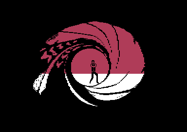
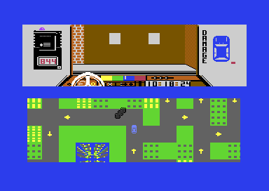
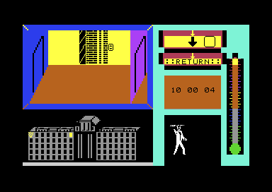
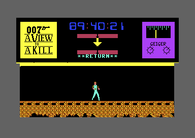

<meta charset="utf-8">
<meta name="viewport" content="width=device-width, initial-scale=1">
<title>{{title}}</title>
<link rel="preconnect" href="https://fonts.googleapis.com">
<link rel="stylesheet" href="https://fonts.googleapis.com/css2?family=Lato:wght@400;700;900&family=IBM+Plex+Mono:wght@400;500&display=swap">
<link rel="stylesheet" href="reference/avtak-page.css">
<!-- tabs -->
<header class="hero">
  <p class="eyebrow">{{platform}} · {{year}} · {{publisher}}</p>
  <h1>{{title}}</h1>
  <p class="sub">Domark's James Bond tie-in, three games of different kinds joined by passwords: a car chase through Paris, a burning City Hall and a bomb in a mine.</p>
</header>
<main class="wrap">
<section id="game">
  <p class="fig">01 · The game</p>
  <h2 class="t">Three games in one box, each unlocking the next with a code</h2>
  <p>The 1985 film gave the game its three set pieces, and each became a different kind of game. In Paris Bond drives after May Day, who has parachuted from the Eiffel Tower, and must be under her when she lands. In San Francisco's City Hall he walks from room to room of a building on fire, using objects from icon menus to reach Stacey and get her out. In the mine under Silicon Valley he climbs, jumps and rides conveyor belts to free May Day and defuse Zorin's bomb.</p>
  <p>Finishing a section shows a five-letter code, and the next section asks for it. The last code opens a short ending. On the Commodore 64 the whole thing is five programs, an intro, the three sections and the ending, loaded one at a time, and these pages treat each as its own program with its own Source page.</p>
  <figure class="overview-shot"><figcaption>The intro's gun barrel, captured in an emulator. Bond walks in, turns and fires, and the screen runs with blood.</figcaption></figure>
  <div class="shots">
    <figure><figcaption>Paris: the view from the car, the cockpit and the street map.</figcaption></figure>
    <figure><figcaption>City Hall: one room at a time, with the building beneath it.</figcaption></figure>
    <figure><figcaption>The mine: a scrolling cave and a clock counting down.</figcaption></figure>
  </div>
  <p class="overview-links"><a href="levels.html">The five parts</a><a href="mechanics.html">How it fits together</a><a href="music.html">Music and speech</a><a href="discoveries.html">Discoveries</a></p>
</section>

<section id="makers">
  <p class="fig">02 · The makers</p>
  <h2 class="t">Designed by Tigress Marketing, programmed by Softstone</h2>
  <p>The intro's scrolling credits name everyone. Game design is by Tigress Marketing Ltd, with thanks to David Bishop and Chris Palmer. Programming is by Softstone Ltd: Tony Knight and his team, Daryl Bowers, Gary Burfield-Wallis, Grant Harrison, Garry Knight and Argentino Trombin. Nichola Blades and Robert Ritson are thanked for help with the graphics, and Tony Crowther for arranging the music: John Barry's James Bond theme and Duran Duran's title song. The speech is credited to B.-Jones.</p>
  <p>Grant Harrison, one of the programmers named, told <a href="https://www.c64.com/gt_display_interview.php?interview=38">c64.com</a> in an interview published on 31 March 2015 how the game was made. It was his first job at Softstone, a new company in London, which he joined when it was recruiting to write the Commodore 64, Spectrum and Amstrad versions for Domark. "Writing A View to a Kill for Domark left me spending many a night sleeping under my desk in order to get it in on time," he said. "I think the general idea was OK, but we had so little time and resources to put it all together." He called it "not one of my best".</p>
  <p>The <a href="https://frgcb.blogspot.com/2023/04/james-bond-007-view-to-kill-domark-1985.html">FRGCB blog</a>, writing in April 2023, adds that Domark had the licence early in 1985, for what the blog calls the first straight Bond movie tie-in, but that the work grew and stalled, and the game came out a month after the film. It credits the Commodore 64 programming and graphics to Grant Harrison alone. It also reports that Dominic Wheatley, Domark's co-founder, told <i>Retro Gamer</i> in issue 96 (2011) that the game did well all the same.</p>
  <p>The game was published by Domark under licence from Eon Productions and Glidrose, as the credits say. Other roles and per-platform programmers are listed by <a href="https://www.mi6-hq.com/sections/games/avtak">MI6-HQ</a> and the German <a href="https://www.c64-wiki.de/wiki/A_View_to_a_Kill">C64-Wiki</a>.</p>
</section>

<section id="reception">
  <p class="fig">03 · Reception</p>
  <h2 class="t">Reviewers praised the effects and faulted the games</h2>
  <p>As <a href="https://en.wikipedia.org/wiki/A_View_to_a_Kill_(video_game)">Wikipedia</a> reports them, the Commodore 64 reviews were mixed at best.</p>
  <table class="t">
    <tr><th>Magazine</th><th class="n">Score</th><th>What it said</th></tr>
    <tr><td><i>Commodore User</i></td><td class="n"></td><td>"Certainly one of the better 'game of the film' implementations around."</td></tr>
    <tr><td><i>Your Commodore</i></td><td class="n">2/5</td><td>"Sometimes programmers can go overboard with special effects at the expense of what could otherwise be a superb game."</td></tr>
    <tr><td><i>Zzap!64</i>, 1985</td><td class="n">36%</td><td>"A powerful idea that seems to have missed its point."</td></tr>
    <tr><td><i>Zzap!64</i>, 1992</td><td class="n">19%</td><td>"a licence with such potential being turned into such a diabolical arcade adventure."</td></tr>
  </table>
  <p>Players have not been kinder. In April 2023 the <a href="https://frgcb.blogspot.com/2023/04/james-bond-007-view-to-kill-domark-1985.html">FRGCB blog</a> found the game at 3.98 from 52 votes on Lemon64, in that site's Top 100 worst games. Its author found Paris "tedious, boring and too long" and said: "I have only ever completed the Paris segment in A View To A Kill, and I still wish that I hadn't bothered."</p>
</section>

<section id="versions">
  <p class="fig">04 · Versions</p>
  <h2 class="t">Other machines, and the copy studied here</h2>
  <p>Domark also released the game for the ZX Spectrum, Amstrad CPC, MSX and Oric (Wikipedia). A text adventure of the same name, by Angelsoft for Mindscape, is a different game. These pages describe the Commodore 64 program only.</p>
  <p>The copy studied is a crack that packs each of the five programs into a file of its own and loads them from a menu. Its files carry leftovers of two earlier cracks, which the <a href="about.html#copy">About</a> tab lists. They are left out of the other tabs.</p>
</section>

<section id="findings">
  <p class="fig">05 · What the code keeps</p>
  <h2 class="t">Codes you cannot win without, a fire that ends the level, and a reset that starts the car chase</h2>
  <p>A section played without its code can be played but not won: City Hall starts again at the exit and the mine's bomb goes off, whatever the player does. A room catching fire around Bond ends City Hall on the spot. The Paris chase begins by resetting the computer into a cartridge header the game keeps in its own memory. The <a href="discoveries.html">Discoveries</a> tab has these and the questions still open.</p>
  <p class="overview-note">The <a href="source.html">Source code</a> tab links every explanation to its address, one page per program. The <a href="about.html">About</a> tab records credits, sources and methods. No game image is hosted here.</p>
</section>
</main>
